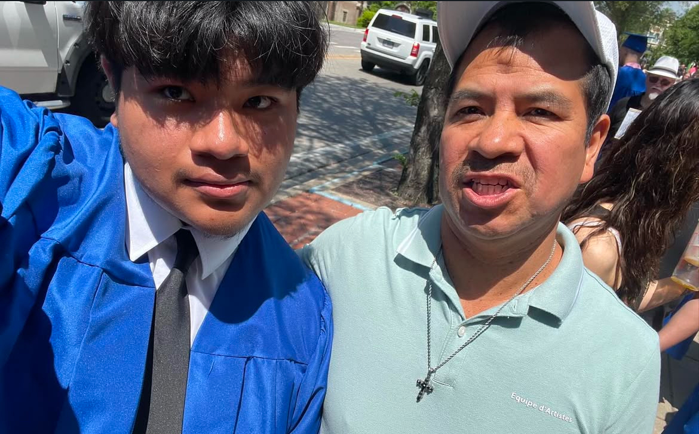

My favorite thing to do usually is go to concerts for bands that aren't too popular, I like it becasue the tickets are often cheap and the music can be really good. Chicago has a great scene for these concerts!

My name is Daniel Bautista, I am the youngest in my family of 5 (including me). My family is originally from central Mexico. I spend my days either working or helping around the house,often whenever I get freetime I practice skating or playing/recording games.
I recently started at IIT, as a 1st year student, I graduated from my highschool in Chicago and I try commute from my house using the Metra.
My favorite thing to do usually is go to concerts for bands that aren't too popular, I like it becasue the tickets are often cheap and the music can be really good. Chicago has a great scene for these concerts!
Recently I've been trying to watch more movies becasue for a while I wasn't able to watch any because I had no way to watch them. My favorite movie I've seen is The Thing, it's the only thriller movie I really like.